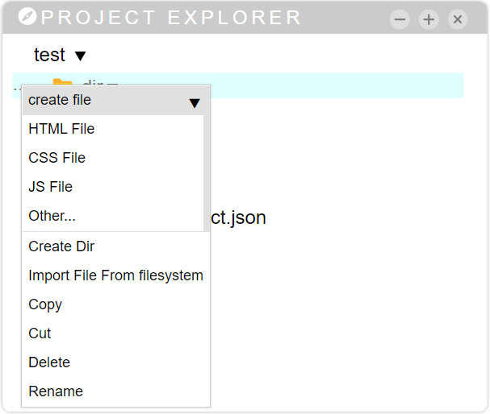
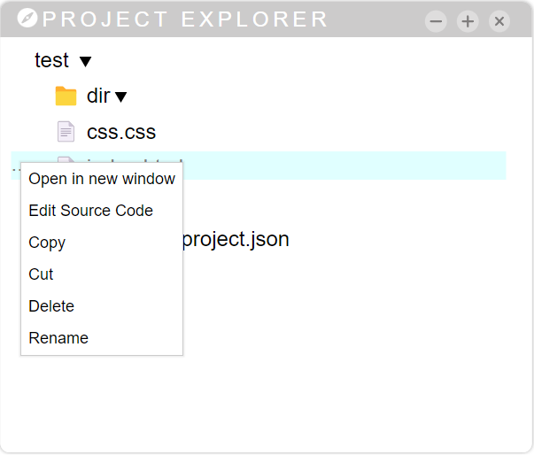

This panel allows you to browse the folder associated with the project you are working on.
Once a resource has been selected (by clicking on it), we can open a drop down by clicking with the right mouse button or clicking on the [...] button on the left.
This dropdown has the following actions:
Create File
after clicking on the "create file" button, a submenu will open with the different types of files to be created.
Here you can choose to create a file with a suffix .html, .css, .js or one without a suffix (you will have to indicate this yourself).
Then,a prompt dialog box will appear asking you for the name of the file. The file name cannot have the following characters:
/\?%*:|"<>
Here you can choose to create a file with a suffix .html, .css, .js or one without a suffix (you will have to indicate this yourself).
Then,a prompt dialog box will appear asking you for the name of the file. The file name cannot have the following characters:
/\?%*:|"<>
A file will be created under the selected directory.
You cannot write the name of an existing project, otherwise an error will be generated.
If you are creating an html file, it will be created based on the template set in the project properties.
You cannot write the name of an existing project, otherwise an error will be generated.
If you are creating an html file, it will be created based on the template set in the project properties.
All these options will only be visible after selecting a directory
Create Dir
After clicking on the "create Dir" button, a prompt dialog box will appear asking you for the name of the directory. The directory name cannot have the following characters:
/\?%*:|"<>
A folder will be created under the selected directory. if a directory with the same name already exists, nothing will be done.
This option will only be visible by selecting a directory
This option will only be visible by selecting a directory
Import file from filesystem
By clicking on this button it will be possible to load a file from the filesystem. The file will be created under the selected folder, and if it already exists it will be overwritten
This option will only be visible by selecting a directory.
This option will only be visible by selecting a directory.
Copy, cut and paste
These functions allow you to copy, cut and paste files and directories within your project.
After selecting the resource, you can call these functions with the keyboard using the keys ctrl + c (copy), ctrl + x (cut), ctrl + v (paste).
The Paste button will not be visible if you have not cut / copied something first. Once pasted, the memory will be free (you will have to select the resource again if you want to copy it back)
The Paste button will not be visible if you have not cut / copied something first. Once pasted, the memory will be free (you will have to select the resource again if you want to copy it back)
Delete
By clicking on this button a confirm dialog will appear asking if you really want to delete the resource. This action cannot be undone.
Rename
After clicking on this button, the resource name will appear editable to be renamed. To finish, click anywhere outside the editable area. A "confirmation box" will appear to approve the operation
Open in new window
This button will only be visible for html files. By clicking on it, a new tab will open with the linked URL
Edit source code
By clicking on this button you will be able to edit the text files with the code mirror editor.
Only files recognized as textual can be edited, otherwise an error dialog will appear.
Only files recognized as textual can be edited, otherwise an error dialog will appear.

